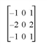
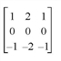
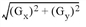
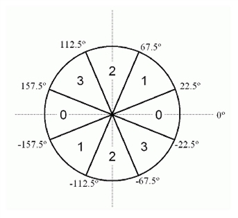

The CANNY function implements the Canny edge-detection algorithm.
The Canny edge-detection algorithm has the following steps:
| 1. | Smooth the image with a Gaussian filter. A 5x5 kernel with a given sigma is used. |
| 2. | Compute the gradient orientation and magnitude. A pair of 3x3 convolution masks are used, one for estimating the gradient in the x-direction ( G x ): |

and the other for estimating the gradient in the y-direction ( G y ):

The magnitude of the gradient is approximated using  .
| 3. | The edge direction is calculated using ATAN( G y , G x ). |
This edge direction is then related to a direction that can be traced in an image, assigning each value to one of four sectors (0, 1, 2, or 3) as follows:
|
 |
| 4. | An edge point is defined to be a point whose gradient magnitude is locally maximum in the direction of the gradient. This process, which results in ridges one pixel wide, is called nonmaxima suppression . After nonmaxima suppression one ends up with an image which is zero everywhere except at the local maxima points. At the local maxima points the value of the gradient magnitude is preserved. |
| 5. | Hysteresis is applied to eliminate gaps. Any pixel in the nonmaxima suppression image that has a value greater than T_HIGH (high threshold calculated from HIGH ) is presumed to be an edge pixel, and is marked as such immediately. Then any pixels that are connected to this edge pixel and that have a value greater than T_LOW (low threshold calculated from LOW ) are also selected as edge pixels. All edges are followed until the value drops below T_LOW. |
Result = CANNY( Image [, HIGH = value ] [, LOW = value ] [, SIGMA = value ])
The result is a byte array containing the edges in the image.
A 2D image array.
The high value used to calculate the high threshold during edge detection, given as a factor of the histogram of the magnitude array. The input range is [0-1]. The default value is 0.8. If the input value is outside the allowable range of [ LOW -1], it is silently clipped to fall into that range.
The low value used to calculate the low threshold during edge detection, given as a factor of the HIGH value. The input range is [0-1]. The default value is 0.4. If the input value is outside the allowable range of [0-1], it is clipped to fall into that range.
The sigma value used when creating the Gaussian kernel. The default value is 0.6
The following example peforms Canny edge detection on an image of Manhattan island, using the default values for the HIGH, LOW, and SIGMA keywords:
; Read a greyscale image
nyny = READ_TIFF(FILEPATH('image.tif', $
SUBDIRECTORY=['examples', 'data']))
; Resize the image
nyny = REBIN(nyny, 384, 256)
; Perform edge detection using defaults
filtered = CANNY(nyny)
; Create a window
WINDOW, XSIZE=384, YSIZE=512
; Display the original and filtered images
TVSCL, nyny, 0
TVSCL, filtered, 1
|
6.3 |
Introduced |